Improve where serious teams place attention.
Turn broad institutional markets into focused, evidence-backed account decisions.

InstitutionLens / Brand system 1.0
InstitutionLens is the quiet intelligence layer between a complex institutional market and a confident commercial decision.
Foundation
The strategic idea
The brand should feel like a private analytical instrument: calm enough for an executive meeting, exact enough for a model review and clear enough for a coverage team to act on.
Turn broad institutional markets into focused, evidence-backed account decisions.
Every priority keeps a visible path to public evidence, client knowledge and explicit fit logic.
InstitutionLens belongs upstream of outreach and alongside strategy, CRM and expert judgment.
Financial-technology vendors and advisors serving banks and credit unions across multiple offers.
Identity
The optical system
The mark is built from four structural planes and one blue focal axis. It suggests observation, narrowing and a selected point without relying on a literal magnifying glass.
Minimum clear space equals the width of one outer plane. Never compress, outline, shadow or rotate the mark.
Color
Material palette
Ivory carries the product. Graphite establishes authority. Signal Blue is reserved for evidence, focus and action—not decoration.
Typography
Editorial intelligence
Used for decisive statements, institutional names and moments that require judgment.
Used for navigation, evidence labels, tables, controls and supporting explanation.
Brand and launch statements
Section-level decisions
Account theses and reasoning
Explanatory product copy
Labels, sources and metadata
Data language
Financial SVG system
Every line, ring and node must carry meaning. The system visualizes how institutional evidence moves, converges and changes confidence.

Use a drawn path for change, never as a decorative flourish.
Blue nodes identify observations that change the account thesis.
Graphite structures establish the universe without competing with the signal.
Rings and axes indicate selection, confidence or convergence.
600–1,400ms · cubic-bezier(.22,1,.36,1)
2,400–4,000ms · ease-in-out
10–16s · linear or subtle alternate
Voice
Verbal system
InstitutionLens speaks like an experienced strategy partner: concise, specific and willing to show the reasoning.
“Five institutions moved into focus after deposit pressure increased.”
“Unlock game-changing, AI-powered leads at unprecedented scale.”
“Fit increased because need, timing and relationship access aligned.”
“Our proprietary algorithm says this account is hot.”
The standard
{kind=link}
{kind=link}
{kind=link}